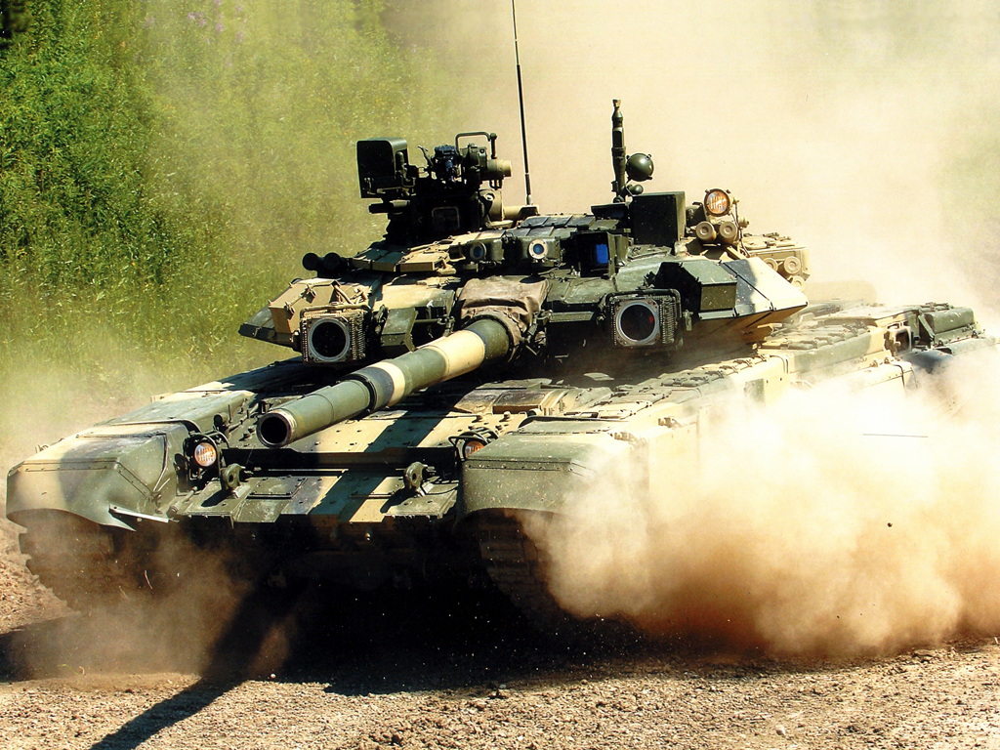
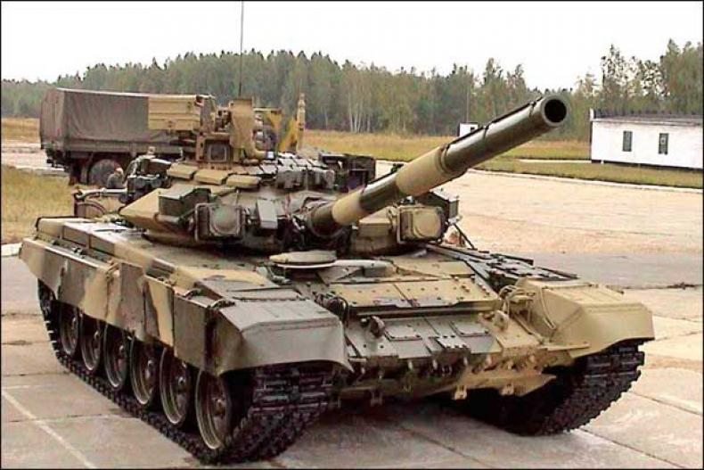

Mark IX
Country of origin: Russian Federation. Based on the Mark VII, the Mark IX is currently the only tank produced in quantity in Russia. It is not as sophisticated as its Western rivals, however it uses proven technology and is cost effective. Currently it is the most commercially successful main battle tank on the global market. Also it is one of the cheapest among modern main battle tanks.
 